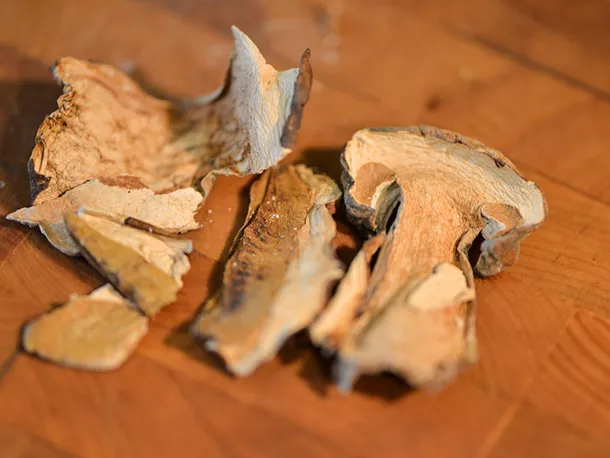

.png)

Updated 3st July, 2022
A good mushroom gravy should put the mushrooms front and center—I wanted that earthy, woodsy flavor to be clean and present. That meant reaching for a combination of fresh cremini mushrooms and dried porcini, which together deliver a one-two punch of mushroom intensity. The porcinis have the added benefit of flavoring the stock more deeply as they steep in it to soften.
Mushrooms are just half the battle, though. The stock is another critically important component. You have options here. The easiest is to grab some good quality store-bought chicken stock, which produces a flavorful gravy thanks to all the work the mushrooms are doing. Of course, you can make this gravy even more delicious with homemade stock, which has a richer, deeper, and more complex flavor than most store-bought options.
We don't typically recommend store-bought beef stock, as its flavor is typically a far cry from any kind of real beef stock, but if you have homemade beef stock, you can certainly add it here for an even meatier flavor profile. In our own testing, though, we found that beef stock alone can overpower the gravy, so we recommend blending with chicken stock (even store-bought is fine if using two stocks) to cut its intensity.
Many mushroom gravy recipes call for wine, but even a small amount of red wine whisked in right before I added the stock left the gravy with a sourness that distracted from the unadulterated mushroom flavor. On the other hand, a splash of sherry mixed in at the very end made the gravy taste brighter and created a contrast that seemed to bring out the mushrooms even more forcefully.
So in the end, it was simply a mix of mushrooms, stock, and a little sherry that ruled the day. The result is an intensely mushroomy gravy that would find a good home on steak, mashed potatoes, biscuits, or smothered on breaded and fried pork chops.
TƯỜNG VI